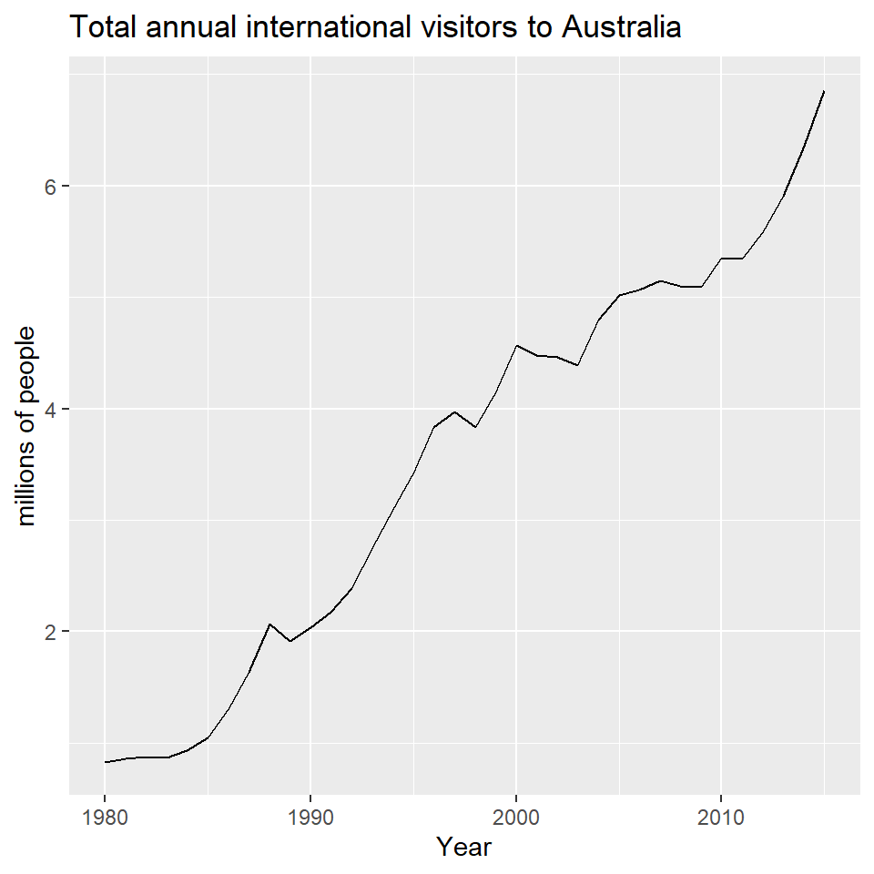
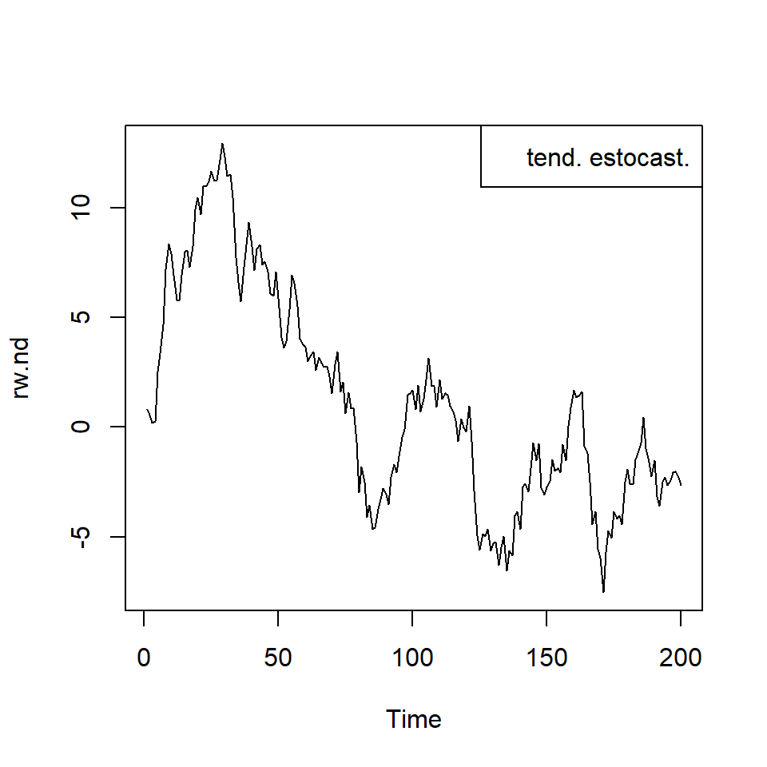

Tema 2: Análisis multivariado de series temporales(4)
![]()
Procesos integrados
Contenido
Procesos integrados
Serie estacionaria por tendencia y por diferencia
El contraste de raíz unitaria
Procesos integrados
Considere una serie univariada \(X_t\).
Definición 1 (Proceso integrado) Si \(\nabla^d X_t\) es estacionario, decimos que \(X_t\) es integrado de orden \(d\), y es denotado por \(X_t \sim I(d)\).
Ejemplo 1
Si \(\nabla^d X_t \sim ARMA(p,q)\), decimos que \(X_t\) es ARIMA(p,d,q), o bien \(X_t \sim I(d)\).
Cualquier serie temporal estacionaria es \(I(0)\).
Recuerde la diferenciación estacional \(\nabla_s^D X_t=(1-B^s)^D X_t\)
Definición 2 (Proceso integrado estacionalmente) Si \(\nabla^d \nabla_s^D X_t\) es estacionario, decimos que \(X_t\) es estacionalmente integrado de orden \(d\) y \(D\), y es denotado por \(X_t \sim I(d,D)\).
Ejemplo 2
- Si \(\nabla^d \nabla_s^D X_t \sim ARMA(p,q)\), entonces \(X_t\) es \(SARIMA(p,d,q)(0,D,0)_s\). Decimos que \(X_t \sim I(d,D)\).
Serie estacionaria por tendencia y por diferencia
Contenido
Procesos integrados
Serie estacionaria por tendencia y por diferencia
El contraste de raíz unitaria
Serie estacionaria por tendencia y por diferencia
Suponga que una serie temporal \(\left\lbrace X_t \right\rbrace\) es una realización de una tendencia determinística y un componente estocástico: \[X_t=CD_t+ \eta_t,\] donde \(CD_t=\beta_0+\beta_1 t\) y \(\eta_t \sim ARMA(p,q)\) que no necesariamente es estacionario e invertible, i.e., tiene su representación \[\phi(B)\eta_t=\theta(B)\epsilon_t\]
Caso 1: Si todas las raíces de \(\phi(B)\) están fuera del circulo unitario, \(\left\lbrace X_t \right\rbrace\) es estacionaria alrededor de una tendencia determinística. Por lo tanto, se puede eliminar la tendencia de la serie original y ajustar un modelo ARMA a los residuales. Este caso se dice que el modelo es estacionario por tendencia (trend-stationary).
Caso 2: si existe una raíz que está exactamente en el círculo unitario y el resto de las raíces están fuera del círculo unitario, i.e. \(\phi(B)=(1-B)\phi^*(B)\), y \(\phi^*(B)\eta_t\) es estacionario, por ende, \(\left\lbrace X_t \right\rbrace\) es estacionaria por diferencia. Por lo tanto, se puede realizar diferenciación para obtener una serie estacionaria. Caso más común es cuando \(d=1\). Este caso se dice que el modelo es estacionario por diferencia (difference-stationary).
Note que el componente del error es \(I(1)\), i.e. ARIMA(p,1,q): \[\phi^*(B)(1-B)\eta_t=\theta(B)\epsilon_t\] Si aplicamos la diferenciación a \[X_t=\beta_0+\beta_1 t+ \eta_t,\] Tenemos que \(\nabla X_t\) es estacionario, pues
\[X_t-X_{t-1}=\beta_0+\beta_1 t+ \eta_t - [\beta_0+\beta_1 (t-1)+ \eta_{t-1}]\] \[=\beta_1 + [\eta_t-\eta_{t-1}]\]
Ejemplo: Tendencia determinística y estocástica
Ajuste con tendencia determinística
Series: austa
Regression with ARIMA(2,0,0) errors
Coefficients:
ar1 ar2 intercept xreg
1.1127 -0.3805 0.4156 0.1710
s.e. 0.1600 0.1585 0.1897 0.0088
sigma^2 = 0.02979: log likelihood = 13.6
AIC=-17.2 AICc=-15.2 BIC=-9.28\[X_t=0.416+0.171t+\eta_t\] \[\eta_t=1.113\eta_{t-1}-0.380 \eta_{t-2}+\epsilon_t\] \[\epsilon_t \overset{iid}{\sim} N(0,0.03)\]
Ajuste con tendencia estocástica
Series: austa
ARIMA(0,1,1) with drift
Coefficients:
ma1 drift
0.3006 0.1735
s.e. 0.1647 0.0390
sigma^2 = 0.03376: log likelihood = 10.62
AIC=-15.24 AICc=-14.46 BIC=-10.57\[X_t-X_{t-1}=0.173+\eta'_t,\] o de otra forma,
\[X_t=X_0+0.173t+\eta_t\] \[\eta_t=\eta_{t-1}+0.301\epsilon_{t-1}+\epsilon_t\] \[\epsilon_t \overset{iid}{\sim} N(0,0.034)\]
fc1 <- forecast::forecast(fit1,
xreg = length(austa) + 1:10)
fc2 <- forecast::forecast(fit2, h=10)
autoplot(austa) +
autolayer(fc2, series="Stochastic trend") +
autolayer(fc1, series="Deterministic trend") +
ggtitle("Forecasts from trend models") +
xlab("Year") + ylab("Visitors to Australia (millions)") +
guides(colour=guide_legend(title="Forecast"))+
theme_bw()+ theme(legend.position="top")Serie estacionaria por tendencia y por diferencia
- Ejemplo de estos dos tipos de estacionariedad:
Tendencia determinística: \[X_t=X_{t-1}+\mu=X_0+\mu t\] Tendencia estocástica (acumulación de choques aleatorias): \[X_t=X_{t-1}+\epsilon_t=X_0+\sum_{s=1}^t \epsilon_s\] donde \(\mu\) es una constante y \(\epsilon_t\) es ruido blanco.
- En síntesis, una serie temporal \(\left\lbrace X_t \right\rbrace\) está compuesto por una tendencia determinística y un componente estocástico \(\eta_t\) que es modelado por \(ARIMA(p,d,q)\).
- Se puede descomponer \(\eta_t\) en dos componentes: tendencia estocástica (choques aleatorios) y el componente aleatorio “estacionario”.
- Entonces, \(\left\lbrace X_t \right\rbrace\) se puede descomponer en tres componentes:
- tendencia determinística,
- tendencia estocástica, y
- el componente “aleatorio”.
- Un modelo estacionario por tendencia, no tiene la tendencia estocástica, y el componente aleatorio es \(ARMA(p,q)\).
- En el caso de un modelo estacionario por diferencia, el polinomio autoregresivo del componente \(\eta_t\) tiene al menos una raíz unitaria.

- Vimos que si una serie temporal \(\left\lbrace X_t \right\rbrace\) se puede descomponer en tres componentes: (1) tendencia determinística, (2) tendencia estocástica, y (3) el componente “aleatorio”, i.e., \[ X_t=CD_t+ \eta_t, \] donde \(CD_t=\beta_0+\beta_1 t\) y \(\eta_t \sim ARMA(p,q)\) que no necesariamente es estacionario e invertible, i.e., tiene su representación \[\phi(B)\eta_t=\theta(B)\epsilon_t\]
- Si existe una raíz que está exactamente en el círculo unitario y el resto de las raíces están fuera del círculo unitario, i.e. \(\phi(B)=(1-B)\phi^*(B)\), y \(\phi^*(B)\eta_t\) es estacionario. Por lo tanto, \(\left\lbrace X_t \right\rbrace\) es estacionaria por diferencia. Por lo tanto, se puede realizar diferenciación para obtener una serie estacionaria.
- El modelo se puede representar como \[X_t=CD_t+ \eta_t,\] \[\phi^*(B)(1-B)\eta_t=\theta(B)\epsilon_t\]
El contraste de raíz unitaria
Contenido
Procesos integrados
Serie estacionaria por tendencia y por diferencia
El contraste de raíz unitaria
El contraste de raíz unitaria
Para investigar si el proceso: \[\eta_t=X_t-CD_t,\] contiene raíz unitaria, Dickey Fuller (1979) propuso la prueba de DF de la siguiente forma:
- Suponiendo que \(\eta_t\) es un AR(1):
\[\eta_t=\phi_1 \eta_{t-1}+a_t\] - Si se toma una diferencia:
\[\nabla \eta_t=\eta_t-\eta_{t-1}=\phi_1 \eta_{t-1}+a_t-\eta_{t-1}=(\phi_1-1) \eta_{t-1}+a_t=\pi \eta_{t-1}+a_t\]
Se puede obtener el estimador del mínimo cuadrado de \(\hat{\pi}^*\) mediante una regresión ordinaria de \(\nabla \eta_t\) sobre \(\eta_{t-1}\). Por lo tanto, el contraste para la estacionariedad se puede formular mediante las siguientes hipótesis: \[H_0: \phi_1=1 ~~\text{v.s.}~~ H_1: \phi_1<1\]
- De la diapositiva anterior,
\[\nabla \eta_t=\eta_t-\eta_{t-1}=\phi_1 \eta_{t-1}+a_t-\eta_{t-1}=(\phi_1-1) \eta_{t-1}+a_t=\pi \eta_{t-1}+a_t\]
La idea es obtener el estimador del mínimo cuadrado de \(\hat{\pi}\) mediante una regresión ordinaria de \(\nabla \eta_t\) sobre \(\eta_{t-1}\). Por lo tanto, el contraste para la estacionariedad se puede formular mediante las siguientes hipótesis: \[H_0: \phi_1=1 ~~\text{v.s.}~~ H_1: \phi_1<1\] o equivalentemente a: \[H_0: \pi=0 ~~\text{v.s.}~~ H_1: \pi<0\]
- El contraste se puede realizar mediante la estadística \(\hat{\tau}\) de Dickey-Fuller:
\[\hat{\tau}=\frac{\hat{\pi}^*}{e.e.(\hat{\pi}^*)}.\]
- La distribución de \(\hat{\tau}\) no es conocida y se obtiene los percentiles y los valores críticos de la distribución de \(\hat{\tau}\) por medio de simulaciones.
- Si se rechaza la \(H_0\), la serie es estacionaria.
- Si no se rechaza la \(H_0\), la serie es no estacionaria, y se tiene que: \[\eta_t-\eta_{t-1}=a_t,\] la cual es denominada camino aleatorio.
El procedimiento anterior realiza la prueba después de remover el componente de tendencia determinística \(CD_t\), y además, considera un caso simple de AR(1).
Se puede generalizar el procedimiento anterior involucrando la tendencia determinística y el componente aleatorio de AR(p) y es llamado como prueba de Dickey-Fuller aumentado. Considere
\[\nabla X_t= \tau' DR_t + \pi X_{t-1} + \sum_{j=1}^{k} \gamma_j \nabla X_{t-j} +a_t,~~\text{con}~~ k=p-1\] para asegurar que la correlación serial en el error es removido.
- Este procedimiento involucra un valor \(k\) predeterminado.
- Considere el caso de una tendencia lineal: \[\nabla X_t= \beta_0 + \beta_1 t + \pi X_{t-1} + \sum_{j=1}^{k} \gamma_j \nabla X_{t-j} +a_t,~~\text{con}~~ k=p-1\] para asegurar que la correlación serial en el error es removido.
Paso 1: Probar \(H_0: \pi=0\) (con el estadístico \(\tau\))
- Si se rechaza \(H_0\), entonces no hay raíz unitaria.
Paso 2: Si \(\pi = 0\), probar \(H_0: \beta_1=\pi=0\) (con el estadístico \(\Phi_3\)).
- Si no se rechaza \(H_0\), entonces no hay tendencia y tiene raíz unitaria.
- Si se rechaza \(H_0\), hay tendencia y tiene raíz unitaria.
Ejemplo: La serie de consumo
La serie del índice de consumo en Reino Unido del cuarto trimestre, 1966 al segundo trimestre de 1991.
- Estimar el modelo completo
###############################################
# Augmented Dickey-Fuller Test Unit Root Test #
###############################################
Test regression trend
Call:
lm(formula = z.diff ~ z.lag.1 + 1 + tt + z.diff.lag)
Residuals:
Min 1Q Median 3Q Max
-0.044714 -0.006525 0.000129 0.006225 0.045353
Coefficients:
Estimate Std. Error t value Pr(>|t|)
(Intercept) 0.7976591 0.3547775 2.248 0.0270 *
z.lag.1 -0.0758706 0.0338880 -2.239 0.0277 *
tt 0.0004915 0.0002159 2.277 0.0252 *
z.diff.lag1 -0.1063957 0.1006744 -1.057 0.2934
z.diff.lag2 0.2011373 0.1012373 1.987 0.0500 .
z.diff.lag3 0.2998586 0.1020548 2.938 0.0042 **
---
Signif. codes: 0 '***' 0.001 '**' 0.01 '*' 0.05 '.' 0.1 ' ' 1
Residual standard error: 0.01307 on 89 degrees of freedom
Multiple R-squared: 0.1472, Adjusted R-squared: 0.09924
F-statistic: 3.071 on 5 and 89 DF, p-value: 0.01325
Value of test-statistic is: -2.2389 3.7382 2.5972
Critical values for test statistics:
1pct 5pct 10pct
tau3 -4.04 -3.45 -3.15
phi2 6.50 4.88 4.16
phi3 8.73 6.49 5.47Paso 1: Probar \(H_0: \pi=0\) (con el estadístico \(\tau\))
- Usando un 5% de significancia, note que el valor crítico es \(-3.45<-2.2389\) el estadístico \(\tau\). Por lo tanto, no se rechaza \(H_0\).
Paso 2: Dado que \(\pi=0\), probamos \(H_0: \beta_1=\pi=0\) (con el estadístico \(\Phi_3\)).
- Note que el estadístico \(F\)= \(2.5972<6.49\) el valor crítico. Por lo tanto, no se rechaza \(H_0\).
- Se concluye que el modelo no tiene tendencia, y con raíz unitaria.
Paso 3: Ya que la serie contiene raíz unitaria, se realiza diferenciación para analizarlo.
La serie diferenciada:

Otros contrastes de raíz unitaria
- Prueba de Phillips-Perron
- Prueba de Elliott-Rothenberg-Stock
- Prueba de Schmidt-Phillips
- Prueba de Kwiatkowski-Phillips-Schmidt-Shin
Paquetes en R
Para replicar los ejemplos de esta presentación, necesitan estos paquetes: